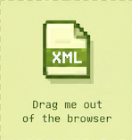

Go to
https://nogard.dev/tools/ minecraft-chibi-skin-maker
and generate the spritesheet.
See preview on this page.
Configure the mate with the options you want.|
Author: Pet Name: Description: |
Download your animation file.
Export the animation.xml and drop it to your windows Pet to see it in action directly on your windows.